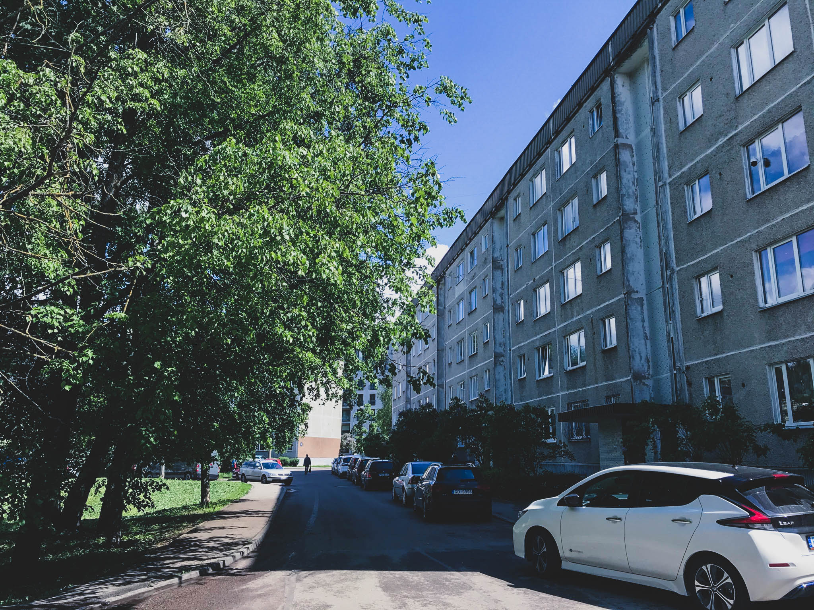

Džohara Dudajeva gatve
Ceļš, kas kādreiz diendienā veda mani uz Latvijas Universitāti, taču pēdējā gada laikā jau retāk, sākas Džohara Dudajeva gatvē. Gatvi veido 16 mājas, tās ir izvietojušās zig-zag veida formā pretī līdzvērtīgam zig-zagam, ko veido Andromedas gatve. Gatve izvietota Rīgas rajona, Purvciema, ziemeļaustrumu pusē, starp Gunāra Astras, Dzelzavas un Lielvārdes ielām, kas kopīgi veido trijstūra formu kartē, kurā tad arī atrodas mana ceļa sākumpunkts. Tomēr, manuprāt, stāsts šīs ielas nosaukuma pamatā ir tā aizraujošākā daļa.
Pagājušā gadsimta deviņdesmitajos gados, kādreizējā Kosmonautikas iela, kura ieguva savu nosaukumu Padomju laikā, tika pārsaukta Čečenijas ģenerāļa un pirmā valsts prezidenta Džohara Dudajeva vārdā. Ar to Latvija akcentēja atbalstu Čečenijas neatkarības triecieniem un vērtībām, kuras virzīja brīvības cīnītājs Dudajevs. Latvijā atbalstīja Dudajevu, jo viņš bija pirmais Padomju ģenerālis, kas atklāti pauda atbalstu Baltijas valstu neatkarību atjaunošanai. Kā Latvijā, tā arī Igaunijā, Lietuvā un citur Eiropā kāda iela, parks vai cita vieta tiek godāta Dudajeva vārdā.